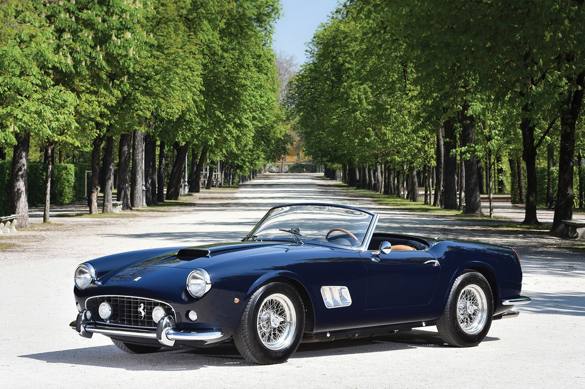
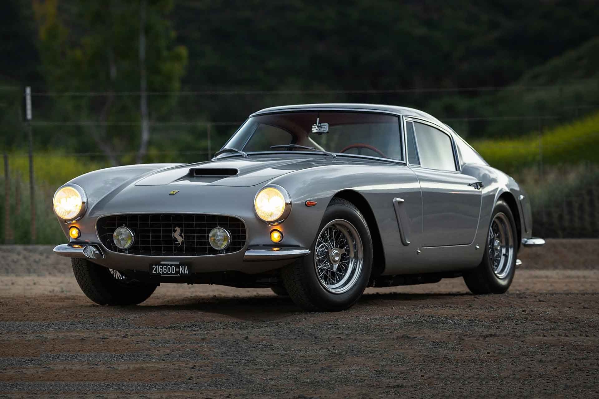

El Ferrari 250 es una serie de autos deportivos y grandes turismos construidos por Ferrari entre 1952 y 1964. La línea inicial más exitosa de la compañía, la serie 250, incluye muchas variantes diseñadas para uso en carretera o carreras de autos deportivos . Los coches de la serie 250 se caracterizan por utilizar un motor Colombo V12 de 3,0 L (2953 cc) diseñado por Gioacchino Colombo . Fueron reemplazados por los coches de las series 275 y 330 .
La mayoría de los 250 coches de carretera comparten las mismas dos distancias entre ejes, 2.400 mm (94,5 pulgadas) para la distancia entre ejes corta (SWB) y 2.600 mm (102,4 pulgadas) para la distancia entre ejes larga (LWB). La mayoría de los convertibles utilizaban el tipo SWB.
Típico de Ferrari, el Colombo V12 hizo su debut en la pista de carreras, con los 250 de carreras precediendo a los autos de calle por tres años El primer 250 fue el prototipo experimental 250 S berlinetta inscrito en la Mille Miglia de 1952 para Giovanni Bracco y Alfonso Rolfo. Los corredores del Mercedes-Benz W194 de Rudolf Caracciola , Hermann Lang y Karl Kling fueron más rápidos en las largas rectas, pero el Ferrari de 230 CV (169 kW; 227 hp) recuperó suficiente terreno en las colinas y curvas para ganar la carrera. [2] El coche se inscribió posteriormente en Le Mans y en la Carrera Panamericana . El 250 S utilizaba una distancia entre ejes de 2250 mm (88,6 pulgadas) con un marco enrejado tubular "Tuboscocca". La suspensión era de doble horquilla en la parte delantera, con resortes semielípticos longitudinales dobles que ubicaban el eje vivo en la parte trasera. El coche tenía frenos de tambor y dirección de tornillo sin fin típicos de la época. El motor de 3,0 L (2953 cc (180 pulgadas cúbicas)) de cárter seco utilizaba tres carburadores Weber 36DCF y estaba acoplado directamente a una transmisión manual de cinco velocidades.
 